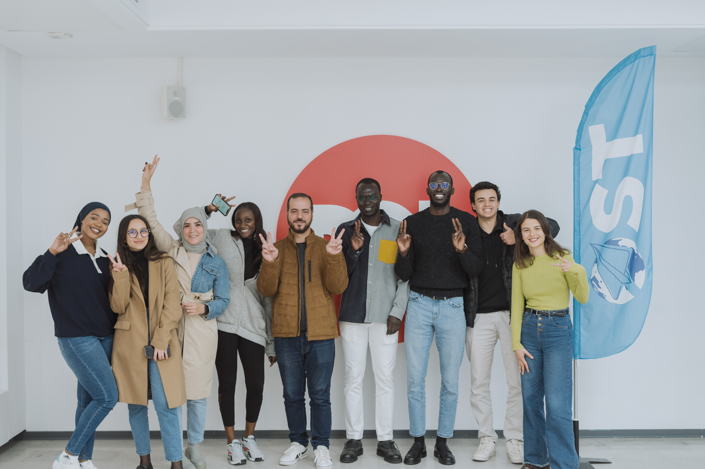
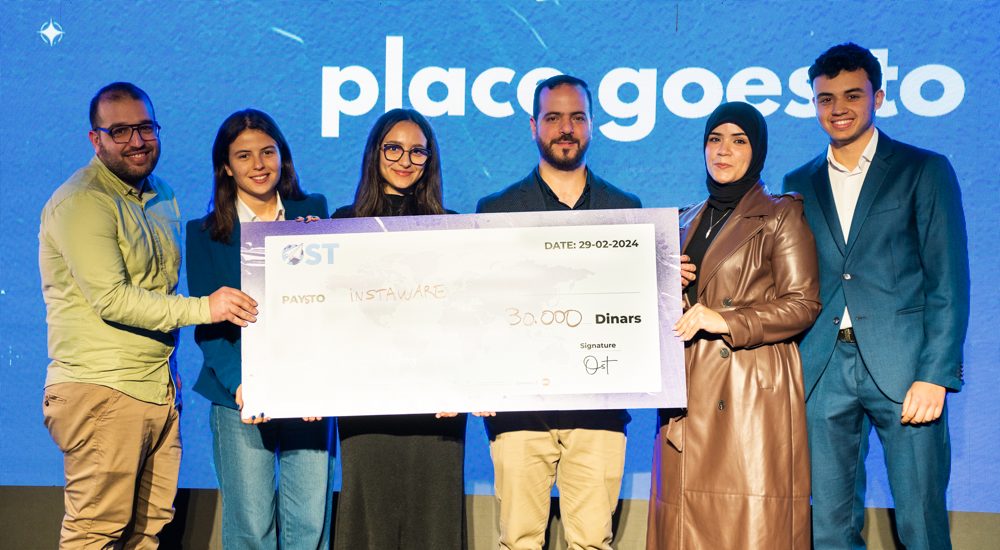
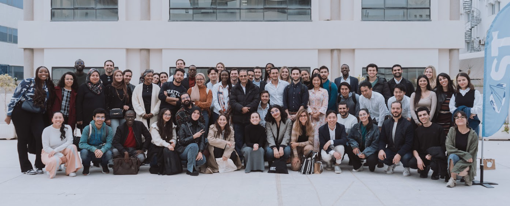
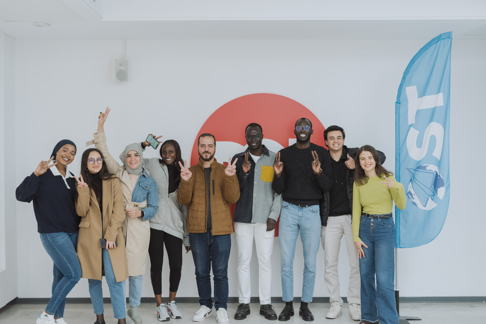
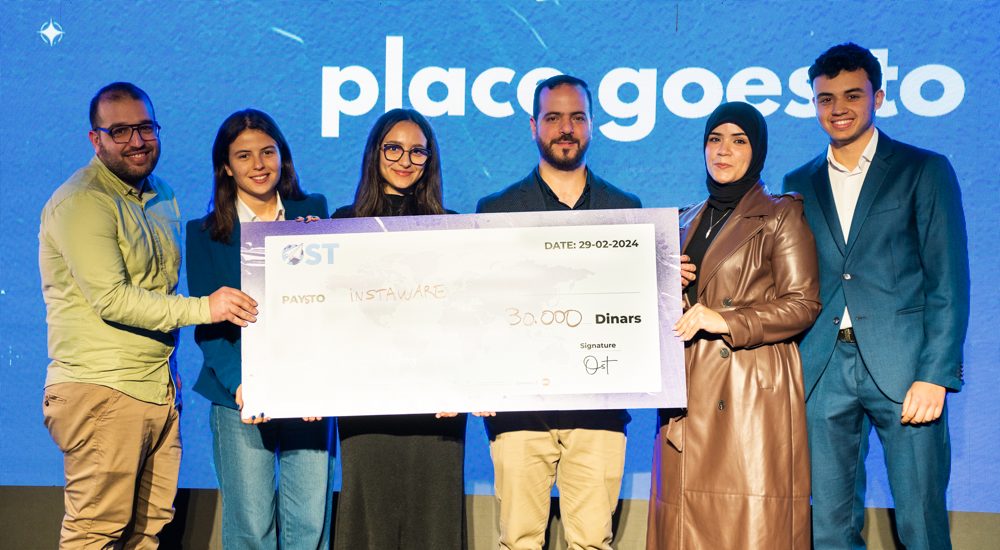
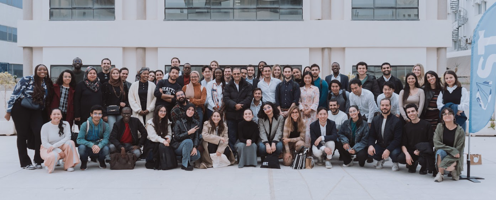

Open Startup Tunisia
Définition : Open Startup Tunisia (OST) est une initiative qui vise à créer un écosystème entrepreneurial en connectant les jeunes talents tunisiens avec des opportunités globales. Elle favorise les échanges entre les startups, les investisseurs et les mentors locaux et internationaux.
Partenariats : OST collabore avec des institutions prestigieuses telles que Columbia University de New York, des incubateurs internationaux, et des entreprises leaders pour soutenir les jeunes entrepreneurs tunisiens.
Grâce à son réseau, Open Startup Tunisia contribue au renforcement des compétences en entrepreneuriat, en innovation et en leadership.